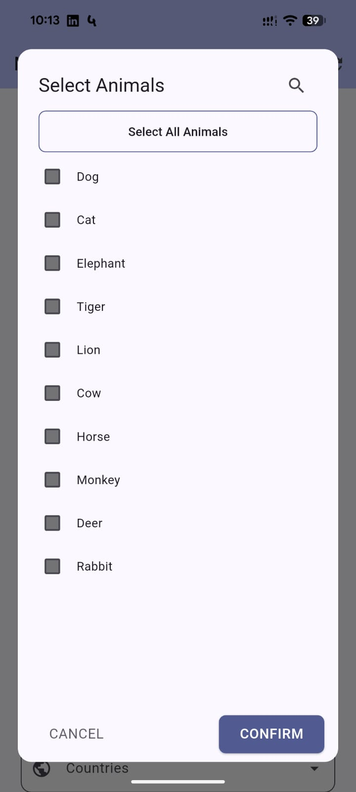
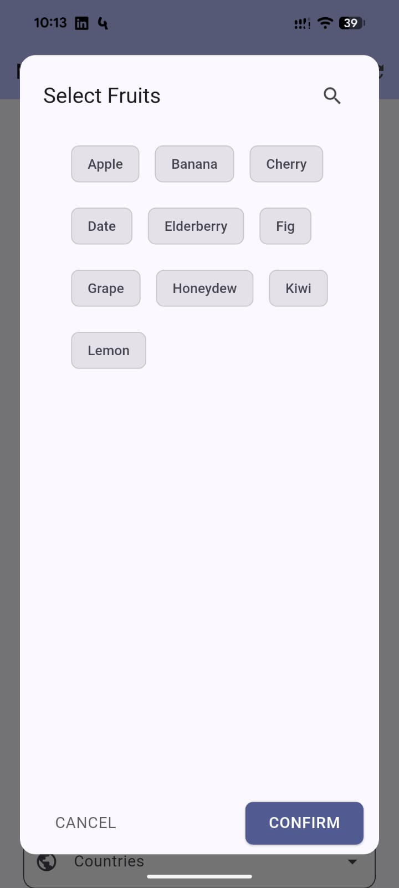
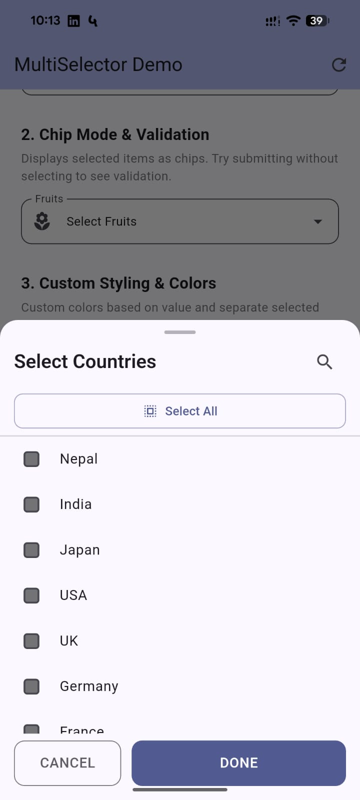
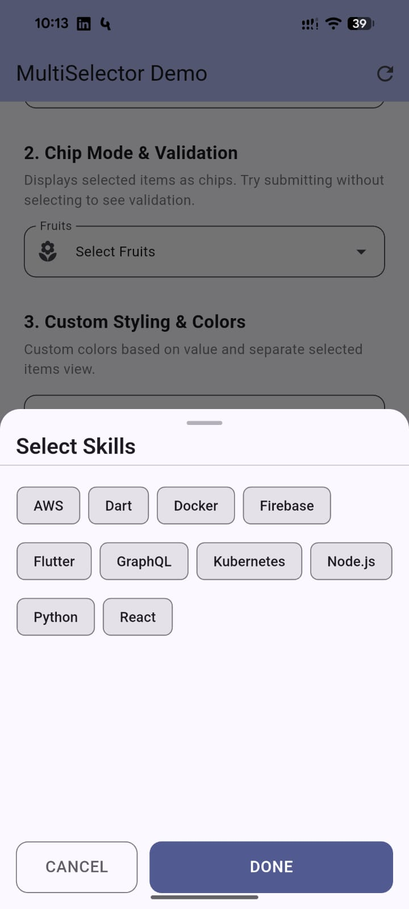

Flutter Multi Selector
A powerful, highly customizable Flutter package for multi-item selection. Supports Dialog and BottomSheet modes with zero effort.
Stable Version: 1.2.0 | SDK: Flutter >= 3.27.0 | Null Safety: Guaranteed
Beginner's Guide 🐣
New to Flutter? This step-by-step guide will help you get started in minutes.
Install the Package
Add the line to your pubspec.yaml and run flutter pub get.
dependencies: flutter_multi_selector: ^1.2.0
Prepare Your Data
Use the MultiSelectorItem class to wrap your data. It needs a Value (for
code) and a Label (for user).
final items = ["Apple", "Banana"].map((e) => MultiSelectorItem(e, e)).toList();
Choose Your Style
Pick the UI that fits your app best. Dialog for classic focus, BottomSheet for modern mobile UX.
Add Extra Power
Turn on searchable: true for long lists or showSelectAll: true for bulk
selection.
Manage the State
Create a list variable and update it inside setState when the user confirms their selection.
onConfirm: (values) {
setState(() => _selected = values);
}
Powerful Features
BottomSheet Support
Material 3 compliant bottom sheets with drag handles and smooth slide animations.
Smart Search
Ultra-responsive real-time filtering even with thousands of items in the list.
Select All / Clear All
Add bulk selection with a single flag. Smart toggle only affects visible search results.
Custom UI Themes
Override every pixel from colors and fonts to the shape of the dialog and chips.
Installation
Add the package to your pubspec.yaml dependencies:
dependencies: flutter_multi_selector: ^1.2.0
MultiSelectorDialogField
Traditional centered dialog. Best for larger screens or dedicated focus on selection.
MultiSelectorDialogField<String>(
items: animals.map((e) => MultiSelectorItem(e, e)).toList(),
initialValue: _selectedAnimals,
title: const Text("Select Animals"),
searchable: true,
decoration: const InputDecoration(
labelText: "Animals",
prefixIcon: Icon(Icons.pets),
),
onConfirm: (values) {
setState(() => _selectedAnimals = values);
},
)
MultiSelectorBottomSheetField
Modern bottom sheet interaction. Recommended for mobile apps following Material 3 guidelines.
MultiSelectorBottomSheetField<String>(
items: countries.map((e) => MultiSelectorItem(e, e)).toList(),
title: const Text("Select Countries"),
searchable: true,
showSelectAll: true,
heightFraction: 0.65, // Occupy 65% of screen height
onConfirm: (values) {
setState(() => _selectedCountries = values);
},
)
Form Validation
Both fields integrate perfectly with Flutter's Form system. Use the validator
property just like you would with a TextFormField.
MultiSelectorBottomSheetField<String>(
items: fruits,
validator: (values) {
if (values == null || values.isEmpty) {
return "Please select at least one item";
}
if (values.length > 3) {
return "Max 3 items allowed";
}
return null;
},
autovalidateMode: AutovalidateMode.onUserInteraction,
onConfirm: (values) => setState(() => _selected = values),
)
Gallery & Visuals 📸
High-quality previews of the package in action across different modes.

Dialog • Vertical List
Dialog • Wrap Chips
BottomSheet • Vertical List
BottomSheet • Wrap ChipsDetailed API Reference
The MultiSelectorDialogField and MultiSelectorBottomSheetField share most parameters
for a consistent experience.
Primary Parameters
| Parameter | Type | Description |
|---|---|---|
| items | List<MultiSelectorItem<T>> | Required. The data to display. |
| onConfirm | ValueChanged<List<V>> | Required. Callback when user taps the finish button. |
| initialValue | List<V> | Pre-selected items on load. |
| title | Widget? | Header title for the selection view. |
| searchable | bool | Show search bar. Default: false. |
| showSelectAll | bool | Show Select/Clear All button. Default: false. |
| useChipsForSelection | bool | Use Chip grid instead of Checkbox list. Default: false. |
| separateSelectedItems | bool | Group selected items at the top. Default: false. |
Styling & UX
| Parameter | Type | Description |
|---|---|---|
| colorBuilder | Color Function(T)? | Map individual values to custom colors. |
| selectedColor | Color? | Base color for selection state. |
| backgroundColor | Color? | Dialog/Sheet background color. |
| fieldShape | ShapeBorder? | Custom shape for the input field. |
| decoration | InputDecoration? | Appearance of the field (label, hint, icon). |
| heightFraction | double? | (BottomSheet only) Screen height occupied (0.0 to 1.0). Default: 0.6. |
| showDragHandle | bool | (BottomSheet only) Show M3 drag handle. Default: true. |
| isDismissible | bool | Allow dismissing by tapping outside. Default: true. |
MultiSelectorItem<T>
| Property | Type | Description |
|---|---|---|
| value | T | The raw data value. |
| label | String | The text displayed to the user. |
| selected | bool | Internal selection state. |
Licensed under the MIT License